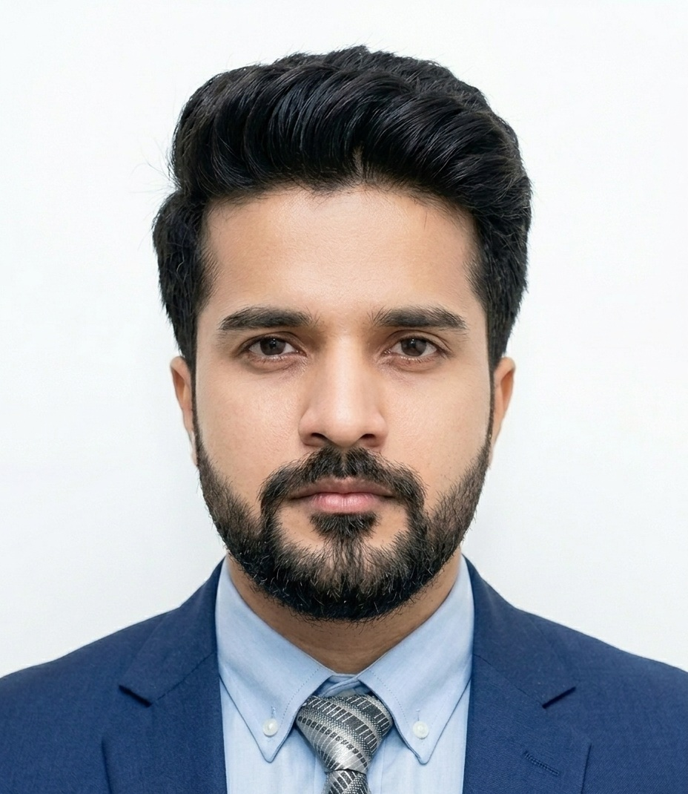

Uman Khalid
Research Professor, Kyung Hee University, Korea
About Me
I am a Research Professor at Kyung Hee University, Korea, affiliated with the Institute for Communications and Quantum Nexus and the Communications and Quantum Information Laboratory, where I have also been a Brain Korea (BK21) Research Professor since 2024. I received my Ph.D. in Electronics and Information Convergence Engineering from Kyung Hee University in 2023 under the supervision of Professor Hyundong Shin, and my Bachelor’s degree in Electronics Engineering from the Ghulam Ishaq Khan Institute of Engineering and Technology, Pakistan.
My research focuses on integrated quantum information technologies spanning quantum communication, sensing, secure networking, and computing. A central theme is the co-design of three complementary directions: classical-for-quantum methods, in which AI and machine learning support quantum-system characterization, sensing, and network operation; quantum-for-classical methods, in which quantum resources enhance learning, optimization, and computation for emerging 6G applications; and hybrid quantum-classical systems, in which quantum and classical processing are engineered together into resource-efficient, practically realizable architectures.
More recently, my theoretical and computational research has expanded toward neutral-atom and Rydberg platforms, including Rydberg-lattice quantum computing and quantum reservoir learning. My broader goal is to bridge theoretical quantum information with experimental and engineering teams to translate quantum algorithms into practical quantum applications. I serve as Series Editor for the IEEE Journal on Selected Areas in Communications Quantum Series on Quantum Communications and Networking.
Research Interests
Quantum Sensing & Metrology
Precision sensing with entangled and correlated quantum probes
Quantum Communication & Networking
Anonymous, counterfactual, and full-duplex protocols for the quantum Internet
Quantum Resource Characterization
Certifying and quantifying coherence, discord, and entanglement
Quantum Semantic Communication
Task-oriented, privacy-preserving communication with quantum resources
Quantum Machine Learning
Hybrid quantum-classical models for vision, ISAC, and remote sensing
Quantum Optimization
Variational algorithms for routing, scheduling, and network design
Satellite-Ground Quantum Networks
Integrated terrestrial and non-terrestrial quantum sensing for 6G
Quantum Clock Synchronization
Distributing time across networks with quantum resources
Neutral-Atom & Rydberg Platforms
Rydberg-lattice quantum computing and quantum reservoir learning